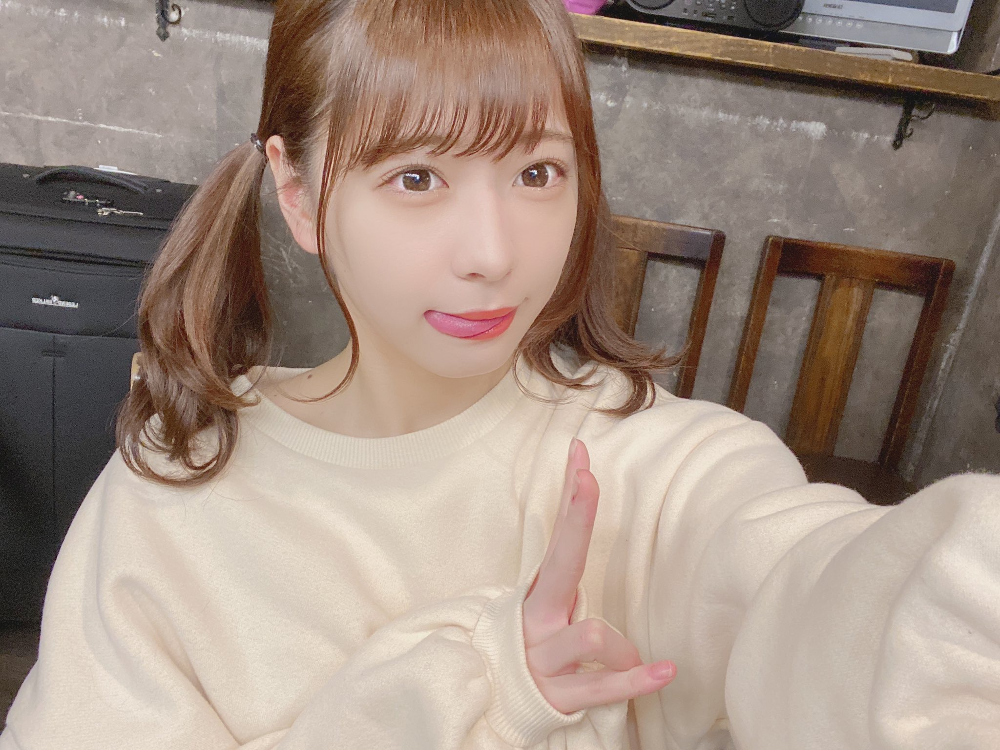

研究について

医療現場で診察の際に用いられる内視鏡で撮影された画像からポリープの大きさを推定したり,
三次元で形状復元を行うという研究を愛知医科大学と行っています.
私の研究では,ポリープの絶対的な大きさを求めるために参照物体を用いており,参照物体として血管を用いた研究を行っています.
また使用する血管を抽出するために,U-Netというニューラルネットを用いています.
検出した血管の情報を用いて局所特徴量による画像間のマッチングを行ったりしています.
この知識を活かして,研究所でインターンを行ってきました.
オリジナリティが評価され国際会議にもアクセプトされました.
学会に投稿した際のPDFを載せているのでよろしければご覧ください.
またgithubやQiitaにも記事を書いているのでよろしければ御覧ください.
Hack U 作品紹介
Hack U 作品紹介